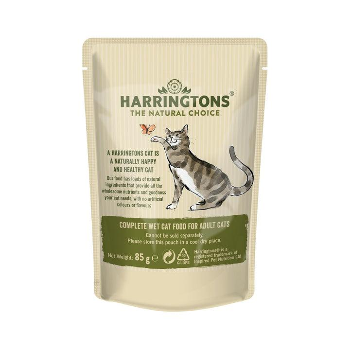
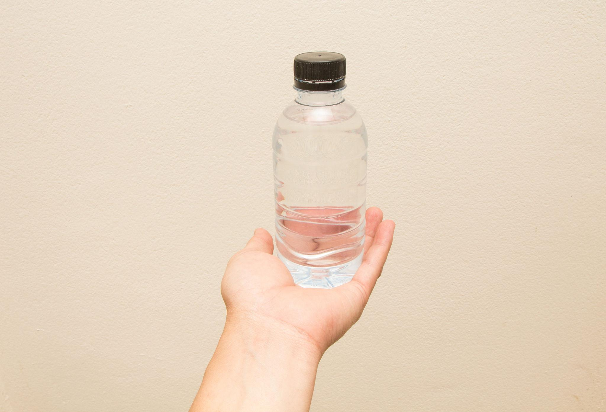

Alimentação: um gesto de cuidado
Tenha sempre que possível um sachê ou uma pequena porção de ração apropriada para cães ou gatos. Esse alimento pode ajudar um animal que esteja passando fome.

Água fresca também é cuidado
Uma garrafinha de água potável pode fazer diferença, especialmente em dias quentes. Se encontrar um animal com sede, ofereça água limpa em um recipiente adequado, sem forçá-lo a beber.

Aprenda a ajudar na prática 🐾
Veja como pequenas atitudes podem fazer a diferença na vida de um animal.